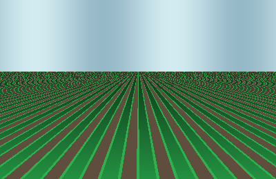

September 12, 2026
Optimizing Spinach Canopy Hydration via Sub-Surface Probes
How continuous dielectric soil measurements reduced localized root rot by 42% in Hesse greenhouses.
Read more ↗All-in-one SaaS platform to manage crops, monitor fields, and boost yield with data-driven insights.

1/6We bridge hardware telemetry with automated precision irrigation. Our platform monitors every acre in real time so you can conserve water and maximize crop quality.
From soil microbiology to aerial surveillance, AgroPulse combines field sensors, satellite weather, and automated valves in one cockpit.
Continuous canopy health tracking, chlorophyll index readings, and early disease detection alerts.
Sub-surface capacitive moisture probes calibrated for sandy, loamy, and clay agricultural profiles.
Automated valve actuation based on plant evapotranspiration demand and rain forecasts.
Hyperlocal micro-climate forecasts, frost alerts, and solar radiation index tailored to your coordinates.
Assign field scouts, track fertilizer application schedules, and monitor greenhouse crew completion rates.
Ultra-low power optical and multispectral camera feeds streaming direct greenhouse crop footage.
No hidden hardware fees. Get started with a 14-day free trial on any tier.
For pilot plots and private family greenhouses.
For commercial agribusinesses scaling yield & automation.
For regional farming co-ops and enterprise acreage.
Actionable telemetry techniques, soil hydration studies, and IoT hardware guides.
How continuous dielectric soil measurements reduced localized root rot by 42% in Hesse greenhouses.
Read more ↗Running localized machine learning models directly on solar-powered microcontrollers during grid blackouts.
Read more ↗A pragmatic guide for farm managers on correlating top-down optical maps with localized capacitive probes.
Read more ↗